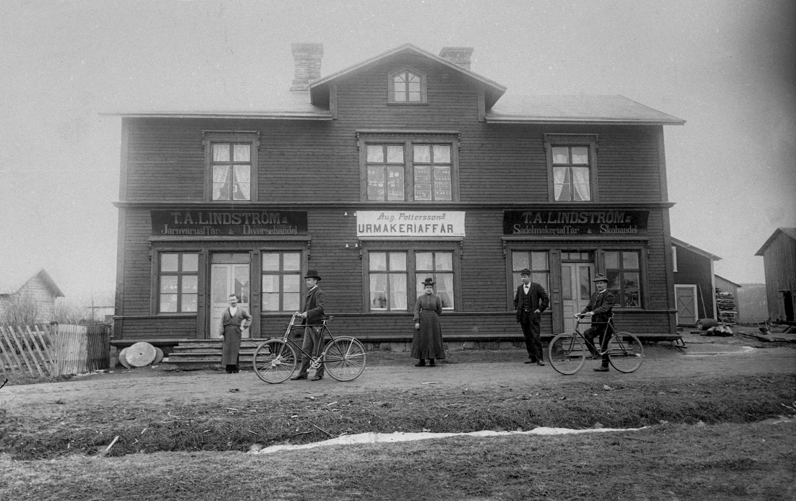
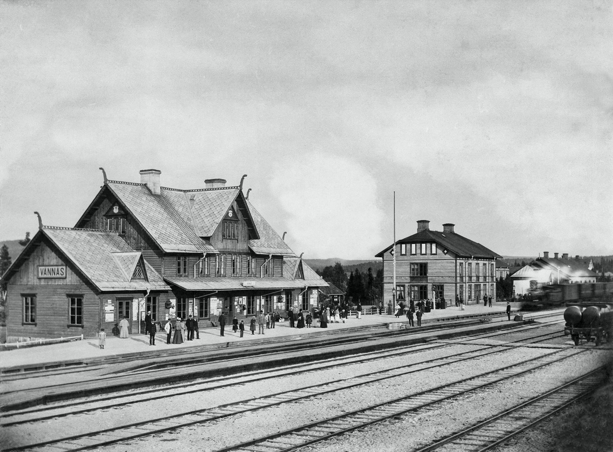
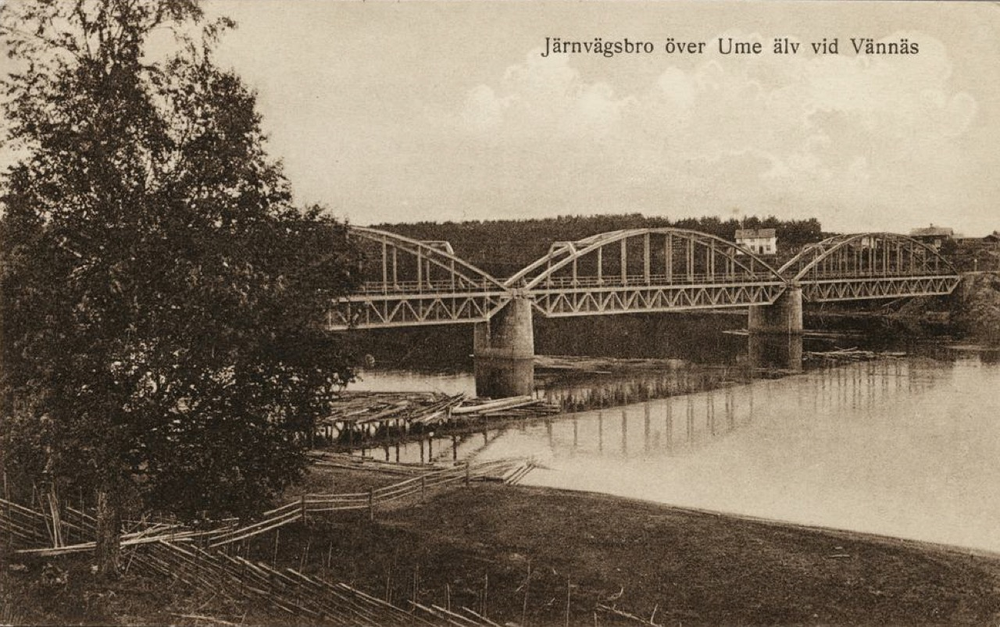

1880 1940
En liten plats.
En stor historia.
Drömmen om en stad. Drömmar om ett bättre liv.
Upptäck människorna och platserna som formade Vännäs.
Allt började med
en dröm om
något större.
När järnvägen kom till Vännäs förändrades mer än landskapet. Här började nya liv.
Handlare, hantverkare, järnvägsarbetare och familjer sökte sig hit. De byggde hus, startade verksamheter och lade grunden till det samhälle vi känner idag.
Genom fotografier, kartor och personliga berättelser följer vi Vännäs utveckling under åren 1880–1940. Ett stycke lokalhistoria, berättat av dem som var där.
Möt människorna i arkivetEn plats i förändring.
Följ några nedslag i berättelsen.

Järnvägen förändrar allt.
Järnvägen kommer till Vännäs. Runt stationen växer ett samhälle fram, med nya arbeten, handelsbodar och människor som söker en framtid här.
Ögonblick som
stannade kvar.
Bakom varje fotografi finns ett liv.
Stanna en stund. Titta närmare.
Historien är här.
Hitta din del av den.
Sök ett namn, en gata eller en plats.
Hela arkivet väntar på att upptäckas.
Gatorna minns.
Se var husen stod och var bilderna togs.
Gatuadresserna följer arkivets karta från 1946.
Läser in den historiska kartan…
Klicka på en markering för att läsa om platsen. Historiska uppgifter från arkivet visas på en nutida baskarta.

JÄRNVÄGSBRON ÖVER UME ÄLV · 1918För att det som var
ska finnas kvar.
En samling negativ. Ett livslångt intresse. En gemensam kunskapsbank.
Fotoamatören Rune Edebro dokumenterade Vännäs och samlade äldre fotografier. På 1970-talet fick han i uppdrag av Kulturnämnden att ta fram material till en fotoutställning om ortens historia.
Idag lever arbetet vidare genom Inger Edebro Sikström och Tomas Sikström. Bilderna kompletteras med berättelser, källor och kunskap från fler som känner Vännäs.
Med material från bland andra Järnvägsmuseet, Västerbottens Museum, Västerbottens regementes arkiv och Folkrörelsearkivet i Västerbotten.
Historien fortsätter
att växa.
Fortsätt läsa.
Drömmar om ett bättre liv
Ett stationssamhälle växer fram i Wännäs socken. Boken presenteras i originalarkivets nyheter och finns enligt uppgifterna där även hos Mandatus.
Kontakta Mandatus om bokenTelefon: 090 145 405
Vännäs järnvägssamhälle 130 år
Ett häfte framtaget till jubileet 2021, 130 år efter järnvägens ankomst till Vännäs.
Läs jubileumshäftetDin berättelse
hör också hemma här.
Känner du igen ett ansikte? Har du en bild, en berättelse eller en uppgift som behöver rättas? Hjälp till att bevara Vännäs historia.